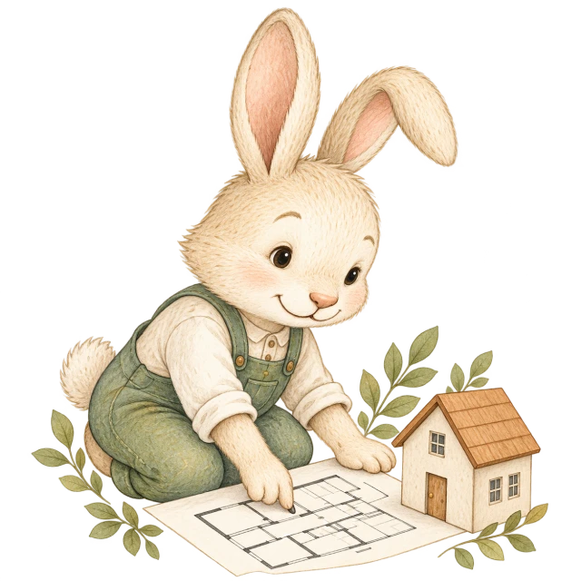
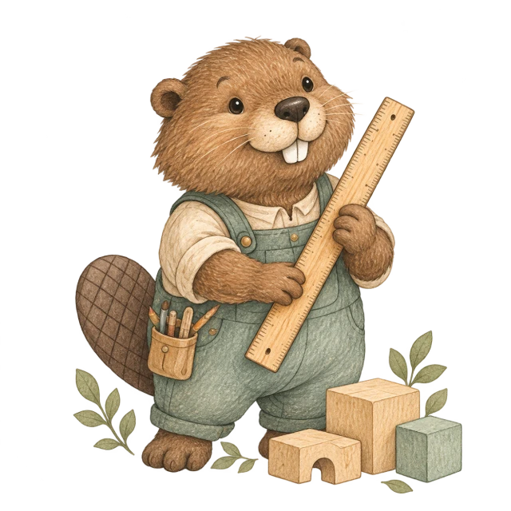
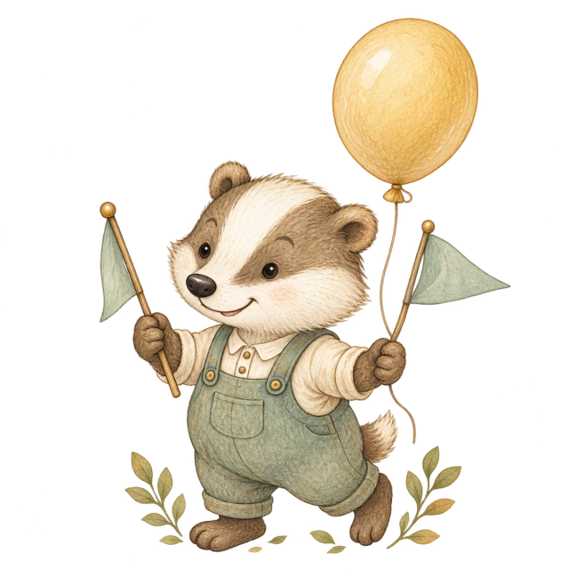

Франшиза
Откройте сад под брендом «Дети в приоритете»
- Зарегистрированная торговая марка ↗
- Готовая бизнес-модель
- Поддержка на ключевых этапах
- Обучение команды
- Роялти: 20 000 ₽ в месяц
550 000 ₽Подробнее →
Опыт действующего сада, документы и поддержка команды — от первой идеи до первых дней работы.
С 2016 года
Действующий сад
Откройте сад под брендом «Дети в приоритете»
Запустите сад со своей концепцией и нашей поддержкой
Для самостоятельной организации запуска
Укажите параметры и посмотрите, как может работать ваш сад.
Пять шагов до первых детей в саду. Объём помощи зависит от выбранного формата.

Проверка помещения, переговоры с арендодателем и смета.

Планировка групп, зонирование, мебель и материалы.
Реклама и работа с обращениями родителей до открытия.
Подбор воспитателей и руководителя, обучение и адаптация.

Документы, помощь с лицензией, праздник открытия и первые дети.
Место, где детям интересно, а родителям спокойно.
2016
2019 · «Семейный старт»
2021 · 2-е место, федеральный этап
2024 · «Добрая мама», региональный этап
2025 · в социальной сфере
Расскажите, в каком городе хотите открыть сад и есть ли уже помещение. Вместе определим следующие шаги.
Важны площадь, планировка и состояние помещения. Во франшизе и открытии под своим брендом поможем оценить выбранный вариант.
Да. Для этого есть формат «Открытие под своим брендом»: документы и наставничество до открытия, без роялти.
Цена на карточке — стоимость выбранного пакета. Аренда, ремонт и оснащение сада оплачиваются отдельно.
Расскажите, где планируете открыть сад. Начнём с ваших вопросов и найдём подходящий путь.